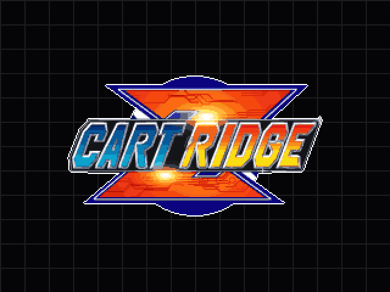

The kit cartridge's menus are drawn from: pixel-art components rebuilt in HTML as
the reference for each screen, before and while it is drawn on the device. Every shape is a
sprite written pixel by pixel, every word lands on whole pixels, and every colour follows the
backdrop colour the player picks in Settings › Theme › Colour, over the pattern picked in
Style. The rules for adding to the kit are in assets/ui/README.md.
Foundation
The art pixel
foundation/tokens.css
One art pixel is --u, 2px: cartridge draws its pixel art 2×2, so
a 640×480 panel is 320×240 art pixels. Every size in every component is a whole number of
them, and nothing is ever smoothed: sprites are shown with
image-rendering: pixelated.
Sprites
foundation/pixel.js
A shape is written in its component as rows of colour keys, one character to
an art pixel, and CartridgePixel.sprite() paints it. A shape that must fit any size
is a 9-slice: only its top-left quarter is drawn, mirror() makes the rest, and
its corners stay as drawn while its edges stretch.
const CORNER = [ // cartridge-modal's frame
'...kk', // k dark, H bright, s stripe,
'.kkHH', // A frame colour, . nothing
'.kHss',
'kHsAA',
'kHsAA',
];
Type
foundation/fonts.css
Pixel Code Regular at 18px, one face pixel to an art pixel, on a 20px line so its
capitals sit on whole pixels. Pixel Code Bold is fattened off the grid, so it is not used:
bold is drawn by setting the word again one pixel to the right. Bigger words (an action's
label) are drawn into a sprite with CartridgePixel.letters() and stretched there,
never with a CSS transform. Components draw it with
text-rendering: geometricPrecision: the browser's default hinting smears its
edges by part of a pixel.
Backdrop
foundation/backdrop.js
The shelf's backdrop: the backdrop colour under one of the patterns in
Settings › Theme › Background, each a tile drawn in whole art pixels and drifting left with
data-moving (16px a second, Bits 10), as
crates/cartridge-ui/src/backdrop.rs draws them. The Style picked above puts the
same pattern behind every example on this page.
API
What it does
.cartridge-backdrop
Draws the backdrop over the element, in the colour palette.js set.
data-style
grid (without one), plates, dotted, dither, rivets, bits or solid.
data-moving
Drifts the pattern left, as the device does with Motion on Moving.
The palette is made from the backdrop colour. Its ramp is Mega Man Zero's own
menu colours, which is what Amber gives; any other colour keeps how light each step is and
turns the ramp to its own hue, taking as much colour as it has itself. Night, the default,
gives plain greys. CartridgePalette.apply(name) sets these properties and every
component draws itself again. The swatches follow the colour picked above.
Components
<cartridge-modal>
components/cartridge-modal.js
The menu window and nothing else: a double-lined frame that stacks what it is
given top to bottom. It knows nothing of what it holds; usually that is
<cartridge-panel>s, which grow to share its height and share one stripe where
they meet. It fills the box the page gives it.
API
What it does
slot
Anything, stacked top to bottom. Give a child a bigger flex-grow (or a flex-basis in whole art pixels) to make it taller.
A titled section for inside a modal: a dark tab with the title from its left
edge and a slanted end, the bright strip beside it, and a well below for the content.
activenot active
API
What it does
label
The title in the tab, from its left edge.
active
Draws the title light, as the section the cursor is in; without it the title is dimmed.
slot
The section's content, in the well.
--cartridge-tab-width
How wide the tab is: 121 art pixels by default, never narrower than its title.
The bottom bar's left action: a return arrow in a notch at the screen's edge, a
big label, and a button pill with a hint. 15 art pixels tall; the notch rises 4 above it.
Without attributes it is empty, with room kept for its label.
emptywith textgiven room, as wide as CONFIRM A beside it
API
What it does
label
The big word: a sprite, bold, its capitals 10 pixels tall, with a shadow.
font
bold (or none) or thin: the label drawn again a pixel to the right, or in Pixel Code's own strokes. See The bar's font.
hint
The smaller word in the pill.
room
How wide the label's box and the hint's box are at least, in art pixels: 54 30. Each word stays in the middle of its box, rounded down to a whole pixel. <cartridge-bar> sets it on both its actions.
<action-left> mirrored, for the right end of the bar: the
button pill, the label, then the arrow in its notch at the screen's edge. Same attributes
and parts.
emptywith text
API
What it does
label
The big word: a sprite, bold, its capitals 10 pixels tall, with a shadow.
font
bold (or none) or thin, as <action-left>'s.
hint
The smaller word in the pill.
room
How wide the label's box and the hint's box are at least, as <action-left>'s.
One setting in a panel's well: its name on the left, its value on the right,
13 art pixels tall, as tall as a panel's header. The row under the cursor is lit the way a
title tab is drawn, a band in the tab colour inside a frame line with its corner pixels left
out, its name cream and its value bright. A value Left and Right change gets a ◀ and a ▶
while lit, a row that opens another screen a › at its end. Without any of that it is a plain
name and value line. Five rows and four fit, with their two headers, in the modal of a
640×480 screen.
The setting's name, from the left, in capitals whatever case it is given in; cut off when it runs into the value.
value
What it is set to, from the right, as given. Optional.
lit
The row under the cursor: the band, the name in --oz-cream, the value and arrows in --oz-frame-hi. Unlit, the name is --oz-label and the value --oz-dim.
carets
A ◀ and ▶ either side of the value while lit, for a value Left and Right change. Their room is kept unlit too, so the value never moves.
opens
A › at the end, lit or not, for a row that opens another screen.
dim
Not available: everything drawn in --oz-band, --oz-dim when lit, and no carets.
A Wi-Fi network or a Bluetooth device in a list: an <cartridge-row>
whose name keeps its own case, with what it is to the handheld on the right. A network's
row then has a padlock if it needs a password and the top bar's Wi-Fi icon, as many of its
three parts lit as the signal is strong; room is kept for the padlock and the bars on every
row, so they line up down the list. A device's row has its kind's icon where the bars end,
in the middle of a room 9 art pixels wide, and keeps no room for a padlock or bars, so a
list of devices lines its values and icons up the same way. Lit and dim as
<cartridge-row>.
a listsignal 3 to 0, unlit and lit
Bluetooth deviceseach kind, unlit and lit
API
What it does
label
The network's or the device's name, from the left, in its own case.
value
What it is to the handheld, right-aligned before the icons: CONNECTED, JOINING, SAVED for a network; CONNECTED, CONNECTING, PAIRING, PAIRED for a device. Optional.
signal
0 to 3: the Wi-Fi bars, that many of their three parts lit (dot, small arc, big arc), the rest faint. No bars without it.
lock
A padlock beside the bars, for a network with a password.
device
audio, gamepad, keyboard or other: a Bluetooth device's row, with headphones, a gamepad, a keyboard or the Bluetooth rune (also for a kind not known) where the bars end, 7 art pixels tall like the capitals. Its row has no padlock or bars and keeps no room for them.
lit, dim
As <cartridge-row>'s. The icons are drawn in the name's colour.
::part
row, label, value, lock, signal, device
<cartridge-list-row label="Home" value="CONNECTED" signal="3" lock lit></cartridge-list-row>
<cartridge-list-row label="Café Guest" signal="2"></cartridge-list-row>
<cartridge-list-row label="8BitDo SN30 Pro" value="CONNECTED" device="gamepad"></cartridge-list-row>
<cartridge-list-row label="Mi Smart Band 4" device="other"></cartridge-list-row> <!-- found only: no value -->
<cartridge-gauge>
components/cartridge-gauge.js
A level on one line, like Mega Man Zero's life gauge: a title tab naming it, then
a well of cells, as many lit as the level reaches, and an icon at its end. It is a panel's
header with the strip beside the tab made the gauge, 15 art pixels tall like the bottom bar,
so it sits with the menus and on its own over a game: the volume, the brightness, the blue
light and the rewind left. One cell to a step reads best, 9 for a level of 0 to 9; 20 cells
of 5% each for 0 to 100. The cells stand on the title's capitals' rows.
the four over a game, and the volume muted
empty, full, no icon, headphones
API
What it does
label
The name in the tab, in capitals whatever case it is given in, lit in --oz-cream.
value
The level, from 0 to max. Default 0.
max
The level the gauge is full at. Default 100.
cells
How many cells the well has. Lit cells are round(value / max × cells) from the left, in --oz-label; the rest in --oz-plate. Default 20.
icon
A 7×7 sprite after the cells, in --oz-cream: volume, muted, headphones, brightness, bluelight, rewind, fastforward. None without it.
A word on what just happened, as a lone panel says it: the title tab names
what it is about and the well holds one line. It comes and goes on its own, over a game,
the shelf or a menu, where the gauges stand. The tab hugs its title and the strip takes
whatever room the line leaves, so the toast is as wide as the wider of the two. The line
starts in line with the title, in its own case, with 4 rows of well above its capitals
and 4 below; 34 art pixels tall.
what cartridge says over a game
empty, a title alone, a line alone
API
What it does
label
What it is about, in the title tab, in capitals whatever case it is given in, lit in --oz-cream.
text
The line, in its own case, in --oz-cream.
::part
toast (its <cartridge-panel>), line
<cartridge-toast label="SAVE STATE" text="State saved"></cartridge-toast>
<cartridge-toast label="LINK" text="Link was ended"></cartridge-toast>
<cartridge-badge>
components/cartridge-badge.js
What a game is doing that lasts, in the corner over it: the bottom bar's key cap
holding a 7×7 sprite and a word after it. Fast forward shows how fast, dark while R2 is held
and lit once it is latched; a link shows the link, lit while hosting and dark when joined,
and the link broken once it is lost. Lit, it is drawn as a lit row's band: the tab colour
with a frame line round it. 9 art pixels tall like a key cap, its sprite and word on the
capitals' rows, two pixels clear of either end.
fast forward held, latched, at each speed
a link: hosting, joined, lost while hosting, lost when joined
API
What it does
icon
The sprite, in --oz-cream: fastforward, link, unlinked (a link that was lost). Fast forward without it.
text
A word after the sprite, 3 art pixels on, in --oz-cream: the speed, ×4. None without it.
lit
The band of a lit row, --oz-tab inside a --oz-frame line; unlit, the key cap in --oz-dark.
::part
badge, icon, word
<cartridge-badge icon="fastforward" text="×4"></cartridge-badge> <!-- held -->
<cartridge-badge icon="fastforward" text="×4" lit></cartridge-badge> <!-- latched -->
<cartridge-badge icon="link" lit></cartridge-badge> <!-- hosting a link -->
<cartridge-saves>
components/cartridge-saves.js
Which save state the switcher shows (MENU ×2 in a game), over its screenshot at
the top in the middle, under the top bar: a panel titled SAVE STATES, how long ago the save
shown was made in its well, and under that a dot for each save the cart has, newest first,
the one shown lit. Its tab is only as wide as its title, and it is as wide as the title,
the age or the dots need, 41 art pixels tall; the switcher gives it the room of the widest
age among its saves, so it holds still as the selection moves. The age starts in line with
the title, the dots a row past its line, where a descender reaches, and the well shows as
much under them as over the age's capitals.
the newest of four, the third, the last of ten
half a day old: its day and time; and one save, held as wide as that
API
What it does
age
How long ago the save shown was made, in cream: Just now, 4 min ago, 3 hr ago, or its day and time once it is half a day old.
count
How many saves there are, a dot for each, 5 art pixels round and 3 apart; a cart keeps up to 10. Default 1.
at
Which of them is shown, from 0, the newest: its dot is lit in --oz-cream, the rest are --oz-plate. Default 0.
A screen's keys on one line of the kit, on a ground of their own, for where the
bottom bar's hints would sit on a picture: a title tab naming what they are for, then a
well holding the keys, each its key in a small dark cap and then the word, as the bar draws
its hints. It is drawn as <cartridge-gauge> with the keys in the well for
its cells, 15 art pixels tall like the bar; their capitals stand on the title's rows, so
each cap fills the well's inside from top to bottom, and the well shows 2 art pixels
either side of them. Put one just above the bar over a game or a photo, where the bar's
own hints would be hard to read. Given a width, the well takes what is over, the keys at
its left, so a line can keep the room of its widest keys as one comes and goes.
two keys, and one
one key held as wide as two; none; three keys, one with no word
API
What it does
label
The name in the tab, in capitals whatever case it is given in, lit in --oz-cream.
hint
The keys, as <cartridge-bar>'s: a key and what it does, the first word the key, X SCAN; more than one with a | between them, X SCAN | Y FORGET. Each cap is --oz-dark, its letters and the word --oz-cream, 8 art pixels from one key to the next.
width
As wide as the tab and the keys need; a wider one gives the well the rest, the keys at its left.
::part
frame, tab, label, slant, strip, well, hints, hint, key, word
<cartridge-hints label="NETWORK" hint="X SCAN | Y FORGET"></cartridge-hints>
<cartridge-hints label="NETWORK" hint="X SCAN" style="width: calc(150 * var(--u))"></cartridge-hints> <!-- held as wide -->
<cartridge-bar>
components/cartridge-bar.js
The bar along the bottom of a screen, as wide as what holds it and 15 art pixels
tall: an <action-left> and an <action-right> at its ends
and, between them, nothing but the keys a screen has beyond the two actions, so whatever
is behind the bar shows through. The two actions come out one width: the bar gives both
the room of the wider label and the wider hint, and an empty one takes the
other's. The keys go between them as hints, each its key in a small dark cap and then the
word, centred between the actions and on the same rows as the words in the buttons.
emptyone action, the empty one as widewith a hintwith twothe shelf's: its system in a pill between the actions, no hints
API
What it does
hint
A key and what it does, the first word the key: Y FORGET, START FETCH. Two with a | between: Y FORGET | X EDIT.
font
bold (or none) or thin, given to both actions: see The bar's font.
slot
left for the <action-left>, right for the <action-right>; middle for what stands between them in place of hints, the shelf's <cartridge-pill centred>, at the bar's top across the whole room between the actions. A bar with one has no hints.
::part
bar, middle (the room between the actions), hints, hint, key, word
The bar's button pill standing on its own, both its ends rounded, a word in its
dark middle: on the shelf, the shelf's system, GBA, GB or GBC, in the bar's
middle between its two actions, in the middle of the screen. It is always
there on the shelf, even with only one shelf. L1 and R1 change the system, and the pill
rises into place with the new one over 220 ms; a letter jumped to with Up or Down shows
in it for about 2.2 s, then the system rises back. It sinks with the shelf's actions when
the bar changes them, and is gone while the core picker is open. 15 art pixels tall, the
bar's height, with 3 dark pixels either side of the word's ink, on the rows the buttons
print their hints on: pill_face in
crates/cartridge-ui/src/kit/action.rs draws the same pixels.
the five systems, and a letter jumped to
on the shelf, between the bar's actions
API
What it does
text
The word, in capitals, in --oz-cream: the system, GBA, GB, GBC, or a letter, M. The pill is 6 art pixels wide a letter and 7 more: 25 for GBA, 13 for a letter. Without it nothing is drawn, as the shelf shows no pill until it knows its system.
centred
In the middle of what holds it, half of what is over before it rounded up to a whole art pixel: its middle column on the screen's middle, as bar.rs puts it. In the bar's middle, between two actions of one width, that is the screen's middle too.
Settings › Theme › Font picks how the actions' labels are drawn. Bold, the
default, draws each letter again a pixel to its right; thin draws Pixel Code's own
one-pixel strokes, a pixel a letter narrower, over the same shadow and with the same 10
rows of capitals. font on the bar gives it to both actions, which still come
out one width: the shelf's two 107 art pixels wide in thin and 115 in bold, a menu's 90
and 97.
The art of the link screen a game opens with SELECT + MENU, one piece at a
time: the link port along the console's top edge, the GBA link cable's plug on its cable,
the wireless adapter, the radio arcs it calls out with and the clicks of a plug going
home. The screen moves them, a whole art pixel at a time: the plug drops into the port and
lifts out of it, a failed link shakes it a pixel either way, and the arcs pulse in the four
steps of a fade. The plug and the adapter are real things and keep their own colours, the
plug the purple of the real cable (the joiner's end grey, wider, with the socket a third
player's cable goes into); the port, the arcs and the clicks follow the palette.
the host's plug and the joiner's on their cable, and the adapter
a plug home in the port, and its clicks
the adapter on the port, calling out
API
What it does
piece
plug (default), cable, port, adapter, arc or clicks.
role
The plug's end of the cable: host (default), 30 art pixels wide and purple, or join, 36 wide and grey. Both are 54 tall, their tip the bottom 12, 18 wide in the middle.
length
The cable's length in art pixels; it is 6 wide and goes on the neck's middle. Default 20.
width, height
The port's strip: as wide as the screen, from its top edge to the screen's bottom, under the bar. Its lit edge and stripe in --oz-frame and --oz-stripe, the rest --oz-well, the opening in the middle --oz-dark with five pins in --oz-frame-hi. Defaults 160 and 36.
ring, side
Which radio arc, 0 (5 by 14) to 2 (9 by 30), and which side of the adapter, right (default) or left. In --oz-cream, two pixels thick.
What SELECT + MENU opens over a PlayStation game on several discs, where the
link screen opens on a GBA or a Game Boy; the game is held under it. It is put together
from the kit, over the backdrop: a lone DISC panel where the LINK panel goes, 200 art
pixels wide and 8 down, with DISC lit and its carets (the disc picked, of how many), IN
DRIVE (the disc in it) and the game's title as a note; the game's discs side by side
between the panel and the bar, 8 art pixels apart, as big as they all fit, the one picked
raised 6 art pixels and the rest faded back a step; and the bar, B RETURN and A SWAP with
◀▶ PICK between them. Left and Right pick a disc and stop at either end; A swaps the one
picked into the drive, closes the screen and says so in a DISC toast ("Disc 2
inserted"); B, SELECT or SELECT + MENU again close it with the disc left in. A game on one
disc opens nothing: its toast says "Only one disc".
disc 2 of 3 picked, disc 1 in the drive, on a 640×480 screen
Final Fantasy VII
the toasts it says
Key
What it does
◀ ▶
Picks the disc before or after, the panel's DISC row following; no further than the first or the last.
A
Swaps the disc picked into the drive and closes the screen, with a DISC toast; on the disc already in, just closes it.
B, SELECT, SELECT + MENU
Close the screen, the disc in the drive left there.
discs
Each the shelf's face for it, drawn flat (a placeholder box here, as flow.html draws what Rust draws); the shelf's disc stack takes their place in draw_disc_art.
A link or a button drawn as the bottom bar's button pill, both its ends
rounded: for pages around the menus, like the site. The link or button is the page's own,
put inside it, so it keeps its text, its focus and what it does, and it covers the whole
pill. 15 art pixels tall, 6 dark pixels either side of the word's ink. On hover and while
it has focus it is lit, as a row under the cursor; keyboard focus also draws a cream ring
a pixel clear of it (Tab to one to see it).
Lines to read or type exactly, like a card's folders or a command: a dark box
inside an edge line with its corner pixels left out, the lines in cream on lines of 12
art pixels, kept as written and scrolled sideways inside the box when one is too long, so
the page never scrolls. The lines are the page's own <pre>. A label
along the top names them; copy adds a key that puts them on the
clipboard.
label
Games/GBA/ your GBA games
Saves/ saves
System/ cartridge itself
label and copy
ssh root@rg35xxsp.local
neither, one line longer than the box
task deploy:wifi PROFILE=device-dev # builds in seconds, copies it over SSH, reboots
API
What it does
slot
A <pre> with the lines.
label
What the lines are, in --oz-dim along the top, an edge line under it.
copy
A COPY key at the top right; it puts the lines on the clipboard and says COPIED.
A picture of a screen in a handheld's bezel: the shell (a dark outline, a rim
in the frame colour, the plate colour), the black bezel with its corner pixels left out,
and the glass's edge line round the picture, which is the page's own image or video, so it
keeps its alt text. The bezel is 10 art pixels each side, so a 640×480 screenshot at its
own size makes a 680×500 screen and cartridge's 2×2 art pixels stay 2×2. The picture is
a whole number of pixels tall, pixelated at its own size or bigger and smoothed smaller.
led lights the power light under the picture.
led, at its own size: the boot logo

smaller, smoothed
API
What it does
slot
An <img>, <picture> or <video>, with its own width and height. The screen is as wide as the page makes it; set its width from outside.
led
The power light, lit, under the picture's bottom left corner; the bezel's bottom 4 pixels deeper for it.
One thing told about in a few lines, like a feature: its icon in a dark box,
its title beside it and its text under both, inside an edge line with its corner pixels
left out. The title and the text are the page's own, so a title can be a real heading. The
icons are sprites 11 art pixels square in the middle of a 17-pixel box, in the palette's
colours; the theme icon is the palette's four lightest steps, which the Colour turns. In a
panel's well, or straight on the backdrop.
every icon, and none, in a panel
cart
A Game Boy cart, its label and ridges.
chip
A chip, its pins on every side.
rewind
Two heads pointing back.
link
Two arrows, there and back.
window
A menu window, its title tab and a lit row.
gamepad
The d-pad's cross, two buttons, the grips.
wifi
Two arcs over the dot.
bluetooth
The Bluetooth rune.
theme
The palette's four lightest steps.
No icon
The title from the left.
A second paragraph, half a line down.
API
What it does
icon
cart, chip, rewind, link, window, gamepad, wifi, bluetooth or theme. Without one (or with one not known) there is no box.
slot="title"
The title, a heading: in capitals, in --oz-cream, its capitals on the box's middle rows. Keep its font-weight at 400.
slot
The text: paragraphs on lines of 14 art pixels, in --oz-label, half a line apart.
::part
card, icon, title, text
<cartridge-card icon="cart">
<h3 slot="title">The shelf</h3>
<p>Solid carts in their own plastics, with real label scans.</p>
</cartridge-card>
<cartridge-tabs>
components/cartridge-tabs.js
A page's tabs, drawn as a row of panel titles: each tab the dark title tab of
an <cartridge-panel> with its slanted end, on the bright strip, the stripe
line under the row and the panel's edge line round it. The tab shown is an active panel's
title, the tab colour and a cream word; the others are dark with a dim word, cream under
the pointer. The tabs are the page's own links, each to the part it shows, so with scripts
off they are links to parts all shown one under the other. It is an ARIA tablist: Left and
Right move to the tab before or after and show it, Home and End the first and last; a
click, Enter or Space shows the tab pressed; keyboard focus underlines the word. Narrower
than its tabs, it wraps them into rows, each on its own strip.
three tabs, each showing the panel it links to (click, or Tab to one and use the arrows)SHELFSETTINGSTHEMEnarrower than its tabs: they wrap into rows (buttons, no panels)
API
What it does
slot
The tabs: <a href="#part">s (or <button>s with aria-controls), their words in capitals. Each part named becomes a tabpanel, hidden but for the one shown.
label
What the tabs are, for a screen reader (aria-label).
hash
The URL's hash follows the tab shown (none for the first) and the tab follows the hash: links to #part, the back button, and links to something inside a part, which is scrolled to.
select(i)
Shows tab i, an index or a part's id; index is the one shown.
cartridge-tab
The event each change sends, from the first tab shown: detail has index, id, tab and panel.
Components put together on a device-sized screen, each area its own div. Button
Setting rebuilds Mega Man Zero's menu of that name over cartridge's backdrop.